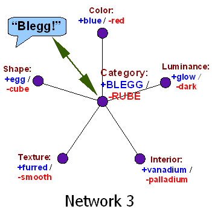

When I hear someone say, "Oh, look, a butterfly," the spoken phonemes "butterfly" enter my ear and vibrate on my ear drum, being transmitted to the cochlea, tickling auditory nerves that transmit activation spikes to the auditory cortex, where phoneme processing begins, along with recognition of words, and reconstruction of syntax (a by no means serial process), and all manner of other complications.
But at the end of the day, or rather, at the end of the second, I am primed to look where my friend is pointing and see a visual pattern that I will recognize as a butterfly; and I would be quite surprised to see a wolf instead.
My friend looks at a butterfly, his throat vibrates and lips move, the pressure waves travel invisibly through the air, my ear hears and my nerves transduce and my brain reconstructs, and lo and behold, I know what my friend is looking at. Isn't that marvelous? If we didn't know about the pressure waves in the air, it would be a tremendous discovery in all the newspapers: Humans are telepathic! Human brains can transfer thoughts to each other!
Well, we are telepathic, in fact; but magic isn't exciting when it's merely real, and all your friends can do it too.
Think telepathy is simple? Try building a computer that will be telepathic with you. Telepathy, or "language", or whatever you want to call our partial thought transfer ability, is more complicated than it looks.
But it would be quite inconvenient to go around thinking, "Now I shall partially transduce some features of my thoughts into a linear sequence of phonemes which will invoke similar thoughts in my conversational partner..."
So the brain hides the complexity—or rather, never represents it in the first place—which leads people to think some peculiar thoughts about words.
As I remarked earlier, when a large yellow striped object leaps at me, I think "Yikes! A tiger!" not "Hm... objects with the properties of largeness, yellowness, and stripedness have previously often possessed the properties 'hungry' and 'dangerous', and therefore, although it is not logically necessary, auughhhh CRUNCH CRUNCH GULP."
Similarly, when someone shouts "Yikes! A tiger!", natural selection would not favor an organism that thought, "Hm... I have just heard the syllables 'Tie' and 'Grr' which my fellow tribe members associate with their internal analogues of my own tiger concept, and which they are more likely to utter if they see an object they categorize as aiiieeee CRUNCH CRUNCH help it's got my arm CRUNCH GULP".
 Considering this as a design constraint on the human cognitive architecture, you wouldn't want any extra steps between when your auditory cortex recognizes the syllables "tiger", and when the tiger concept gets activated.
Going back to the parable of bleggs and rubes, and the centralized network that categorizes quickly and cheaply, you might visualize a direct connection running from the unit that recognizes the syllable "blegg", to the unit at the center of the blegg network. The central unit, the blegg concept, gets activated almost as soon as you hear Susan the Senior Sorter say "Blegg!"
Or, for purposes of talking—which also shouldn't take eons—as soon as you see a blue egg-shaped thing and the central blegg unit fires, you holler "Blegg!" to Susan.
And what that algorithm feels like from inside is that the label, and the concept, are very nearly identified; the meaning feels like an intrinsic property of the word itself.
The cognoscenti will recognize this as yet another case of E. T. Jaynes's "Mind Projection Fallacy". It feels like a word has a meaning, as a property of the word itself; just like how redness is a property of a red apple, or mysteriousness is a property of a mysterious phenomenon.
Indeed, on most occasions, the brain will not distinguish at all between the word and the meaning—only bothering to separate the two while learning a new language, perhaps. And even then, you'll see Susan pointing to a blue egg-shaped thing and saying "Blegg!", and you'll think, I wonder what "blegg" means, and not, I wonder what mental category Susan associates to the auditory label "blegg".
Consider, in this light, the part of the Standard Dispute of Definitions where the two parties argue about what the word "sound" really means—the same way they might argue whether a particular apple is really red or green:
Albert: "My computer's microphone can record a sound without anyone being around to hear it, store it as a file, and it's called a 'sound file'. And what's stored in the file is the pattern of vibrations in air, not the pattern of neural firings in anyone's brain. 'Sound' means a pattern of vibrations."
Barry: "Oh, yeah? Let's just see if the dictionary agrees with you."
Albert feels intuitively that the word "sound" has a meaning and that the meaning is acoustic vibrations. Just as Albert feels that a tree falling in the forest makes a sound (rather than causing an event that matches the sound category).
Barry likewise feels that:
sound.meaning == auditory experiences
forest.sound == false
Rather than:
myBrain.FindConcept("sound") == concept_AuditoryExperience
concept_AuditoryExperience.match(forest) == false
Which is closer to what's really going on; but humans have not evolved to know this, anymore than humans instinctively know the brain is made of neurons.
Albert and Barry's conflicting intuitions provide the fuel for continuing the argument in the phase of arguing over what the word "sound" means—which feels like arguing over a fact like any other fact, like arguing over whether the sky is blue or green.
You may not even notice that anything has gone astray, until you try to perform the rationalist ritual of stating a testable experiment whose result depends on the facts you're so heatedly disputing...
{kind=link}